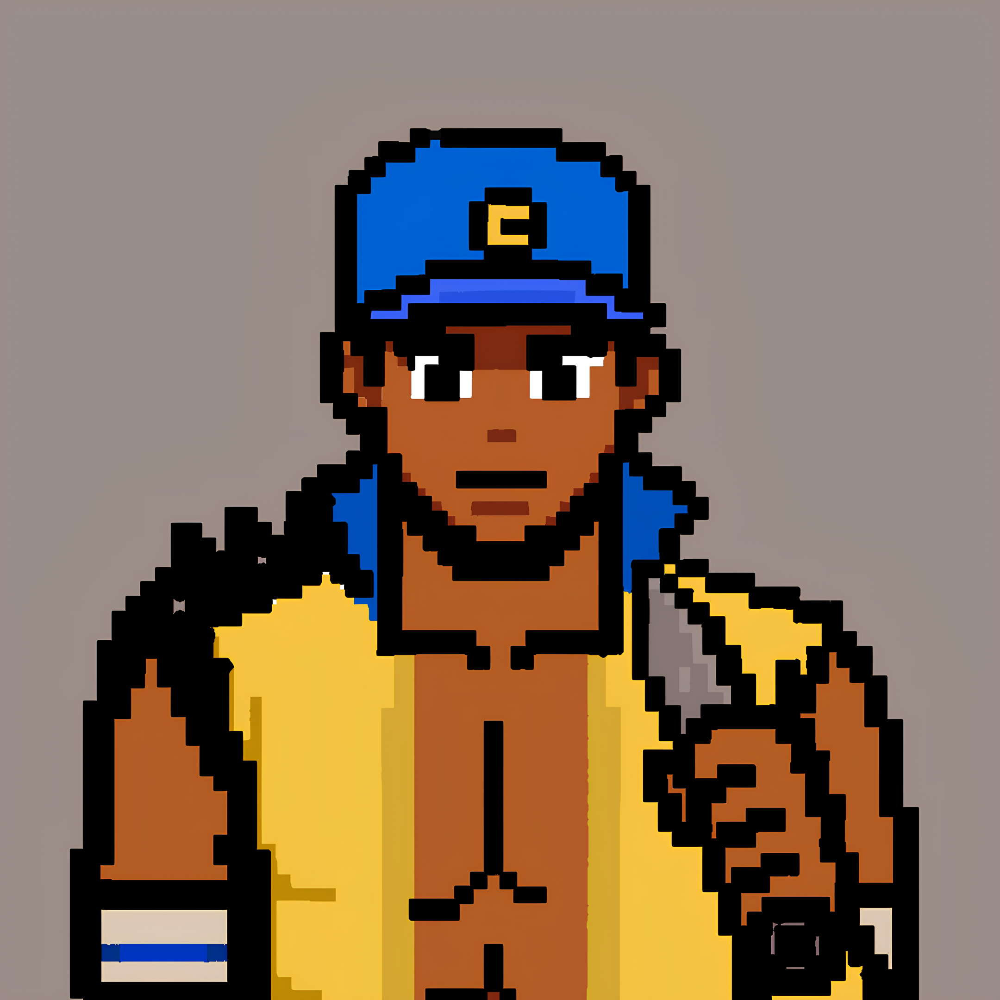

<!DOCTYPE html>
<html lang="en">
<head>
  <meta charset="UTF-8">
  <meta name="viewport" content="width=device-width, initial-scale=1.0">
  <title>Decentralized Voting System</title>
  <link rel="stylesheet" href="styles.css">
</head>
<body>
  
</body>
</html><body>
  <div class="container">
    <header>
      <h2>Lotena</h2>
      <p class="subtitle">
        Elections in Africa and Nigeria in particular have been plagued by issues of fraud, manipulation, and lack of transparency. There is no more transparency in the system. No one knows what happens to their votes after casting them. Voices are cast into the dustbin of history. The power is no longer with the people but with those in power. This is a raging problem in our society which has cost us years of bad governance and poor leadership. We are here to change the narrative. 
        <br>
        <br> 
        <strong>Lotena</strong> is a decentralized voting system built on the solana blockchain. Our sole aim is to provide a service whereby elections are truly free, fair and transparent. We are building a system that will ensure that every vote counts and is verifiable by anyone, anywhere, anytime. We are building a system that will ensure that the power is returned to the people. We are building a system that will ensure that the voices of the people are heard and respected.  
      </p>
    </header>

    <section class="features">
      <h3>Key Features of Lotena</h3>
      <ul>
        <li><strong>Registration:</strong> At Lotena, we dont need voters to queue up at any office to get registered for the election, rather we do it online. This makes the registration process seamless for everyone to do and at a convenient time for evryone.</li>
        <li><strong>Age Verification:</strong> Lotena ensures that the registered voters are eligible to vote by beinging 18 years old and above. </li>
          <li><strong>Voting Tools:</strong> Lotena makes the voting process COMPLETELY FREE for all involved by doing it on-chain.</li>
        <li><strong>Transparency:</strong> Lotena ensures that all votes that are cast in an election are recorded on the blockchain for auditability.</li>
        <li><strong>Results:</strong> Lotena utilises the fast and accurate characteristic of the computer to deliver election results in real-time and a tamper-proof result display which can be accessed by anyone, anywhere, anytime.</li>
      </ul>
    </section>

    <section class="how-it-works">
      <h3>How It Works</h3>
      <ol>
        <li>Register for the election with your details.&nbsp;</li>
        <li>Users above 18 years of age will be allowed to vote.&nbsp;</li>
        <li>Access the voting platform.&nbsp;</li>
        <li>Cast your vote securely and anonymously.&nbsp;</li>
        <li>View live results and audit the process on-chain.</li>
      </ol>
    </section>

    <section class="why-blockchain">
      <h3>Why Blockchain Technology?</h3>
      <p>
        We at Lotena believe that the better question should be why not blockchain technology? We have been living in centralization for a long time and it hasn't profited us much in elections most especially in Africa and Nigeria. Blockchain technology provides a solution to the problems we face in elections today. It ensures that the voting process is transparent, secure, and tamper-proof. With blockchain technology, we can do away with the issues of fraud, manipulation, and lack of transparency that has been a nuisance in our elections. Finally, the power is returned to the people.  
      </p>
    </section>

    <section class="team-section">
      <h3>Meet the Team</h3>
      <div class="team-members">
        <div class="member">
          
          <p>@ogszn_<br><span>Frontend Developer</span></p>
        </div>
        <div class="member">
          
          <p>@x0zaram<br><span>Blockchain Developer</span></p>
        </div>
      </div>
    </section>

    <section class="call-to-action">
      <h3>Ready to Start the Revolution?</h3>
      <p>
        Join us in making elections FREE, FAIR AND TRANSPARENT with Blockchain Technology.<br>
        <button><a href="register.html"> Started </a></button>
      </p>
    </section>

    <footer class="footer">
      Built by The Builders  for the Enugu State Campus Hackathon.
    </footer>
  </div>
  <script type="module" src="/src/main.jsx"></script>
  <!-- <script src="script.js"></script> -->
</body>
